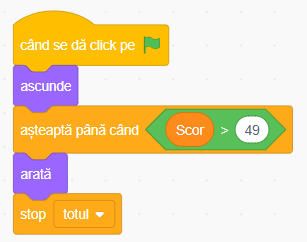
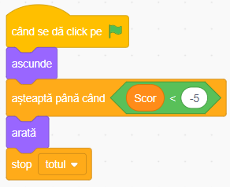

Jocul "Alege Sănătos" în Scratch
Povestea jocului
Într-o lume plină de tentații culinare, e tot mai important să facem alegeri sănătoase! În această aventură digitală, tu vei controla un bol care trebuie să prindă mere delicioase ce cad din cer, evitând în același timp gogoșile dulci dar nesănătoase.
Jocul "Alege Sănătos" este perfect pentru începători în programare și combină distracția cu un mesaj important despre alimentația sănătoasă. Vei învăța să creezi personaje interactive, să programezi mișcări, să detectezi coliziuni și să ții scorul!
Ce vei învăța
- Controlul personajelor cu săgețile de pe tastatură
- Generarea de obiecte care cad aleatoriu
- Detectarea coliziunilor între personaje
- Folosirea variabilelor pentru a ține scorul
- Crearea condițiilor de victorie și înfrângere
Să începem!
Proiectul starter conține deja personajele "win", "lose" si "linie". Va trebui să adăugăm personajul "apple", "bowl" si "donut" din biblioteca Scratch.
Deschide proiectul starterSfat: Apasă butonul "Vezi în interior" pentru a putea edita proiectul, apoi "Remixează" pentru a salva propria versiune!
1 Personajele jocului
Proiectul starter conține deja toate personajele de care ai nevoie:
Bowl (Bolul)
Personajul principal pe care îl vei controla cu săgețile stânga-dreapta.
Apple (Mărul)
Aliment sănătos care îți aduce 1 punct când îl prinzi.
Donut (Gogoașa)
Aliment nesănătos care îți scade 2 puncte când îl prinzi.
Win și Lose
Mesaje de victorie și înfrângere care vor apărea la sfârșitul jocului.
Linie
O linie invizibilă la baza ecranului pentru a detecta când obiectele ating pământul.
Decorul folosit este "Blue Sky", care este deja disponibil în biblioteca Scratch.
2 Controlarea bolului
Primul pas este să facem bolul să se miște stânga-dreapta folosind săgețile de pe tastatură. Selectează personajul Bowl și adaugă următorul cod:
Cum funcționează:
- La începerea jocului - setăm scorul la 0 și poziționăm bolul în partea de jos a ecranului.
- Controlul mișcării - verificăm continuu dacă săgețile stânga sau dreapta sunt apăsate și mișcăm bolul cu 10 pași în direcția corespunzătoare.
- Limitarea mișcării - ne asigurăm că bolul nu iese din marginile ecranului folosind blocul "dacă atinge marginea, ricoșează".
Sfat
Poți ajusta viteza bolului modificând numărul de pași (10) din blocurile "modifică x cu..." pentru o mișcare mai lentă sau mai rapidă.
3 Programarea mărului
Acum vom face mărul să cadă din partea de sus a ecranului și să aducă puncte când este prins. Selectează personajul Apple și adaugă acest cod:
Cum funcționează:
- La începutul jocului - ascundem mărul și îl facem să se rotească.
- Bucla infinită - creăm un ciclu continuu în care mărul:
- Apare în partea de sus a ecranului la o poziție aleatoare
- Cade în jos până atinge bolul sau linia de jos
- Adaugă 1 punct când atinge bolul (și face un sunet)
- Se repoziționează pentru o nouă cădere
- Temporizarea - așteaptă între 1 și 2 secunde înainte de a genera un nou măr, pentru a face jocul interesant.
4 Programarea gogoșii
Gogoașa va funcționa similar cu mărul, dar va scădea puncte în loc să adauge. Selectează personajul Donut și adaugă cod similar cu cel al mărului, dar cu aceste diferențe:
- Când gogoașa atinge bolul, scade scorul cu 2 puncte în loc să-l crească
- Setează intervalul de așteptare între 2 și 3 secunde pentru a face jocul mai echilibrat
Pentru măr:
Pentru gogoașă:
Sfat pentru echilibrare
Poți face jocul mai ușor sau mai dificil ajustând valorile pentru punctaj și intervalele de timp. Mai puține puncte negative sau intervale mai lungi = joc mai ușor.
5 Condiții de victorie și înfrângere
În final, trebuie să adăugăm condiții pentru a ști când jucătorul câștigă sau pierde. Vom folosi personajele "win" și "lose" pentru a afișa mesajele corespunzătoare.
Pentru personajul "win":
Când scorul depășește 49, jucătorul câștigă!
Pentru personajul "lose":
Când scorul scade sub -5, jucătorul pierde!
Cum funcționează:
Ambele personaje sunt ascunse la început. Ele verifică constant scorul și apar doar când sunt îndeplinite condițiile:
- Win apare când scorul > 49, afișând un mesaj de felicitare
- Lose apare când scorul < -5, afișând un mesaj de încurajare pentru a încerca din nou
Când apare oricare dintre ele, toate celelalte acțiuni din joc sunt oprite folosind blocul "stop [totul]".
6 Testează și îmbunătățește
Acum ai toate elementele necesare pentru a face jocul funcțional! Apasă steagul verde pentru a testa jocul și vezi cum funcționează.
Provocări pentru îmbunătățirea jocului
După ce ai terminat jocul de bază, încearcă aceste îmbunătățiri:
Adaugă efecte sonore
Adaugă sunete diferite pentru prinderea mărului, gogoșii sau pentru victorie/înfrângere.
Adaugă nivele de dificultate
Fă obiectele să cadă mai repede pe măsură ce scorul crește.
Adaugă mai multe alimente
Creează noi personaje cu alimente sănătoase (legume, fructe) și nesănătoase (chips, ciocolată).
Crează un ecran de start
Adaugă un ecran de titlu și un buton de "Start" înainte de începerea jocului.
Felicitări!
Ai creat un joc distractiv și educativ care promovează alimentația sănătoasă! Acum poți:
- Împărtășește jocul cu prietenii și familia
- Modifică-l pentru a crea propria ta versiune
- Folosește ce ai învățat pentru a crea noi jocuri